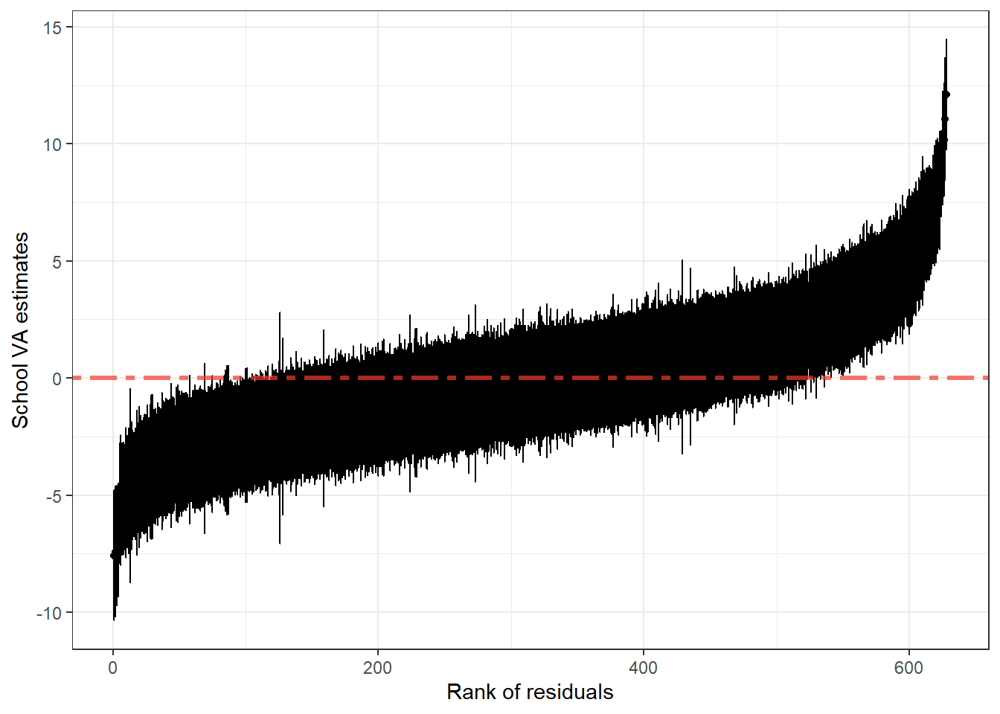
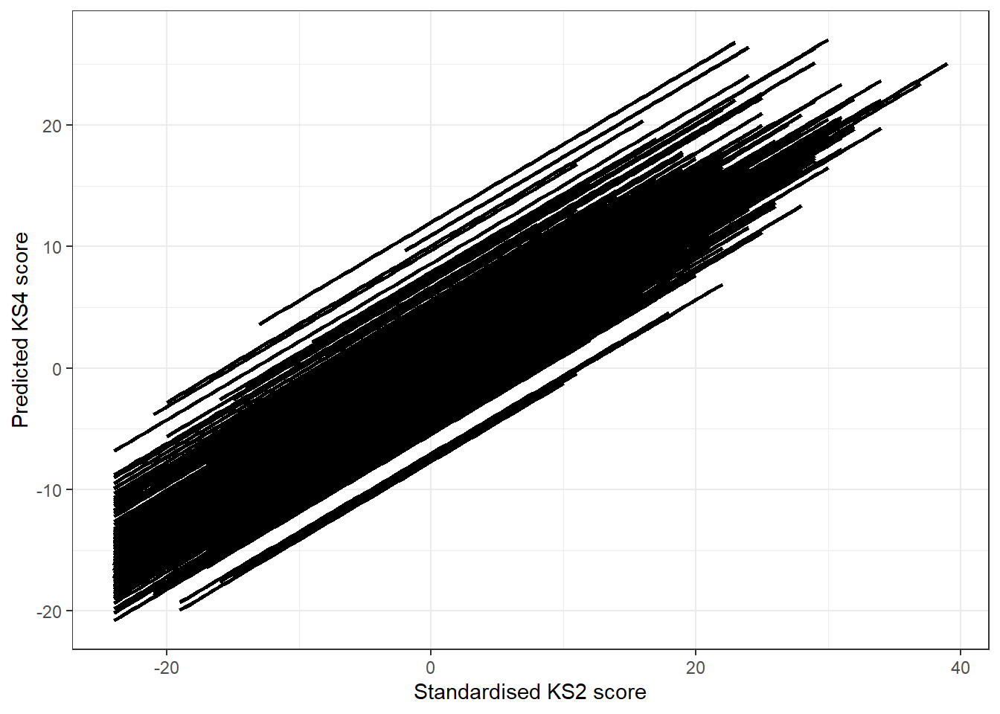

Following up from what we were doing in practical 1, we’ll continue building up our multilevel model for school effects.
Fit a model with “prior attainment” as the only covariate. According to the literature this is a “type AA” value-added model. According to the DfE, this is a school value-added model or “VA”
m1 <-lmer(ks4stand ~ ks2stand + (1|schoolID), data = valueadded, REML = F)
summary(m1)## Linear mixed model fit by maximum likelihood ['lmerMod']
## Formula: ks4stand ~ ks2stand + (1 | schoolID)
## Data: valueadded
##
## AIC BIC logLik deviance df.resid
## 94184.3 94214.5 -47088.2 94176.3 14048
##
## Scaled residuals:
## Min 1Q Median 3Q Max
## -4.8324 -0.5431 0.0227 0.5858 4.6552
##
## Random effects:
## Groups Name Variance Std.Dev.
## schoolID (Intercept) 8.884 2.981
## Residual 44.207 6.649
## Number of obs: 14052, groups: schoolID, 628
##
## Fixed effects:
## Estimate Std. Error t value
## (Intercept) -0.110626 0.132210 -0.837
## ks2stand 0.644306 0.006298 102.298
##
## Correlation of Fixed Effects:
## (Intr)
## ks2stand 0.0061.1. What is the effect of by prior attainment?
Fit a model with all the available level 1 variables. In the literature, this model is called “type AA” value-added. The DfE would this model a “contextualised value-added model” or “CVA”.
m2 <- lmer(ks4stand ~ ks2stand + factor(gender) + factor(fsm) + (1|schoolID), data = valueadded, REML = F)
summary(m2)## Linear mixed model fit by maximum likelihood ['lmerMod']
## Formula: ks4stand ~ ks2stand + factor(gender) + factor(fsm) + (1 | schoolID)
## Data: valueadded
##
## AIC BIC logLik deviance df.resid
## 91571.5 91616.7 -45779.8 91559.5 13740
##
## Scaled residuals:
## Min 1Q Median 3Q Max
## -5.0675 -0.5341 0.0103 0.5770 4.8736
##
## Random effects:
## Groups Name Variance Std.Dev.
## schoolID (Intercept) 8.984 2.997
## Residual 42.304 6.504
## Number of obs: 13746, groups: schoolID, 628
##
## Fixed effects:
## Estimate Std. Error t value
## (Intercept) -0.547500 0.148461 -3.688
## ks2stand 0.622985 0.006357 98.005
## factor(gender)1 1.911990 0.118926 16.077
## factor(fsm)1 -2.271849 0.157245 -14.448
##
## Correlation of Fixed Effects:
## (Intr) ks2stn fctr(g)1
## ks2stand -0.023
## fctr(gndr)1 -0.394 -0.033
## factr(fsm)1 -0.215 0.183 -0.0052.1. How much have the variances (at both levels) reduced?
2.2. What does this mean for the concept of value-added?
3.1. Do male and female pupils have different levels of progress?
m3 <- lmer(ks4stand ~ ks2stand + ks2stand*factor(gender) + factor(gender)+
factor(fsm) + (1|schoolID), data = valueadded, REML = F)
summary(m3)## Linear mixed model fit by maximum likelihood ['lmerMod']
## Formula: ks4stand ~ ks2stand + ks2stand * factor(gender) + factor(gender) +
## factor(fsm) + (1 | schoolID)
## Data: valueadded
##
## AIC BIC logLik deviance df.resid
## 91571.8 91624.5 -45778.9 91557.8 13739
##
## Scaled residuals:
## Min 1Q Median 3Q Max
## -5.0469 -0.5340 0.0103 0.5770 4.8719
##
## Random effects:
## Groups Name Variance Std.Dev.
## schoolID (Intercept) 8.976 2.996
## Residual 42.300 6.504
## Number of obs: 13746, groups: schoolID, 628
##
## Fixed effects:
## Estimate Std. Error t value
## (Intercept) -0.544662 0.148432 -3.669
## ks2stand 0.630388 0.008533 73.874
## factor(gender)1 1.911635 0.118920 16.075
## factor(fsm)1 -2.272931 0.157238 -14.455
## ks2stand:factor(gender)1 -0.015305 0.011776 -1.300
##
## Correlation of Fixed Effects:
## (Intr) ks2stn fctr(g)1 fctr(f)1
## ks2stand -0.008
## fctr(gndr)1 -0.394 -0.026
## factr(fsm)1 -0.215 0.133 -0.005
## ks2stnd:()1 -0.015 -0.667 0.002 0.0053.2. Do FSM eligible pupils make more or less progress?
m4 <- lmer(ks4stand ~ ks2stand + ks2stand*factor(fsm) + factor(gender)+
factor(fsm) + (1|schoolID), data = valueadded, REML = F)
summary(m4)## Linear mixed model fit by maximum likelihood ['lmerMod']
## Formula: ks4stand ~ ks2stand + ks2stand * factor(fsm) + factor(gender) +
## factor(fsm) + (1 | schoolID)
## Data: valueadded
##
## AIC BIC logLik deviance df.resid
## 91556.1 91608.8 -45771.0 91542.1 13739
##
## Scaled residuals:
## Min 1Q Median 3Q Max
## -5.0963 -0.5351 0.0088 0.5752 4.8744
##
## Random effects:
## Groups Name Variance Std.Dev.
## schoolID (Intercept) 8.962 2.994
## Residual 42.253 6.500
## Number of obs: 13746, groups: schoolID, 628
##
## Fixed effects:
## Estimate Std. Error t value
## (Intercept) -0.56386 0.14836 -3.801
## ks2stand 0.63557 0.00703 90.410
## factor(fsm)1 -2.51428 0.16752 -15.009
## factor(gender)1 1.91338 0.11885 16.099
## ks2stand:factor(fsm)1 -0.06332 0.01516 -4.178
##
## Correlation of Fixed Effects:
## (Intr) ks2stn fctr(f)1 fctr(g)1
## ks2stand -0.033
## factr(fsm)1 -0.193 0.007
## fctr(gndr)1 -0.394 -0.028 -0.005
## ks2stnd:()1 0.026 -0.428 0.346 -0.003One of the strengths of MLM is that we can evaluate the effect of multiple variables at different levels on the outcome of interest. Adding higher-level variables is done in the same way as any other individual-level variable.
We can easily create a new school-level variable from the dataset we
have if we aggregate pupil-level data. The code below uses the function
mutate of the dplyr package to create a new
variable that represents the percentage of pupils eligible for free
school meals in each school:
valueadded <- valueadded %>%
group_by(schoolID) %>%
mutate(schoolfsm = mean(fsm, na.rm = T)*100)You can inspect the results by clicking on the object
valueadded that is in your Environment tab.
After that, we’re ready to fit the model with
schoolfsm.
m5 <- lmer(ks4stand ~ ks2stand + schoolfsm + (1|schoolID), data = valueadded, REML = F)
summary(m5)## Linear mixed model fit by maximum likelihood ['lmerMod']
## Formula: ks4stand ~ ks2stand + schoolfsm + (1 | schoolID)
## Data: valueadded
##
## AIC BIC logLik deviance df.resid
## 94182.1 94219.8 -47086.0 94172.1 14047
##
## Scaled residuals:
## Min 1Q Median 3Q Max
## -4.8302 -0.5454 0.0223 0.5870 4.6542
##
## Random effects:
## Groups Name Variance Std.Dev.
## schoolID (Intercept) 8.832 2.972
## Residual 44.203 6.649
## Number of obs: 14052, groups: schoolID, 628
##
## Fixed effects:
## Estimate Std. Error t value
## (Intercept) 0.191653 0.196889 0.973
## ks2stand 0.642585 0.006354 101.130
## schoolfsm -0.014478 0.007003 -2.067
##
## Correlation of Fixed Effects:
## (Intr) ks2stn
## ks2stand -0.095
## schoolfsm -0.742 0.1334.1. What is the effect of the percentage of FSM eligible pupils on GCSE scores?
Plotting the higher-level residuals can be helpful to identify groups that have higher or lower than average effect on the individual-level outcome. In the case of school performance, the residuals can be thought of as the effect uniquely attributable to the school on the progress of their pupils.
To plot the residuals with this purpose, we can use a “caterpillar plot”.
u0 <- ranef(m1, condVar = TRUE) # These are the residuals from model "m1"
u0se <- sqrt(attr(u0[[1]], "postVar")[1,,]) # These are the standard errors of the residuals
schoolid <- as.numeric(rownames(u0[[1]])) # This is to create school identifiersYou will see there are three additional objects in your environment. To put them together in one dataset, we do the following:
school_resid <- cbind(schoolid, u0[[1]], u0se)
colnames(school_resid) <- c("schoolid","u0","u0se")
# Then we sort the residuals in ascending order:
school_resid <- school_resid[order(school_resid$u0), ]
# And we create a new column (variable) containing the ranks:
school_resid <- cbind(school_resid, c(1:dim(school_resid)[1]))
colnames(school_resid)[4] <- "u0rank" # This is to give a name to the new column containing the ranksAfter all this, we end up with a new dataset
school_resid containing the school value-added estimates.
We can plot with ggplot2 as such:
school_VA_plot <- ggplot(school_resid, aes(x = u0rank, y = u0)) +
geom_point(stat = "identity") +
geom_errorbar(aes(ymin = u0 - 1.96*u0se, ymax = u0 + 1.96*u0se)) +
geom_hline(yintercept = 0,size = 1.2, alpha = 0.7,colour = "#EF3B2C", linetype = "twodash") +
xlab("Rank of residuals") +
ylab("School VA estimates") +
theme_bw()
school_VA_plot
In the plot above, the red line at y=0 represents the
overall national average. Each school is represented by a point and a
vertical segment, which represent the average school-specific effect and
its 95% confidence interval (respectively). Schools on the left-hand
side of the distribution that do not overlap with the national average
line are said to be “significantly underperforming”; whereas those on
the right-hand side that do not overlap the red line are “significantly
overperforming”. All schools that do overlap are those that can be
thought of as “performing as expected”.
NB: This is not the only tool to make such judgements about school performance; a comprehensive accountability system would involve also school inspections and qualitative judgements.
You could plot predictions for each school:
valueadded2 <- filter(valueadded, !is.na(ks4stand) & !is.na(ks2stand)) # this filter is necessary to avoid issues with missing values
valueadded2$pred <- fitted(m1)
school_plot <- ggplot(valueadded2, aes(x = ks2stand, y = pred, group = factor(schoolID))) +
geom_smooth(method = "lm", colour = "black") +
xlab("Standardised KS2 score") +
ylab("Predicted KS4 score") +
theme_bw()
school_plot
In the plot above, each line represents a school. As you can see,
there is a lot of variability across schools. Lines are parallel because
we haven’t allowed the effect of KS2 scores to vary across schools; this
is a random intercepts model. You can compare this plot
with the first one we did in practical 1, where the single-level
regression line was clearly not enough to represent the extreme
variability in scores. The MLM can account for that variability across
schools and hence the multiple regression lines seen here are a much
better representation of the observed data.